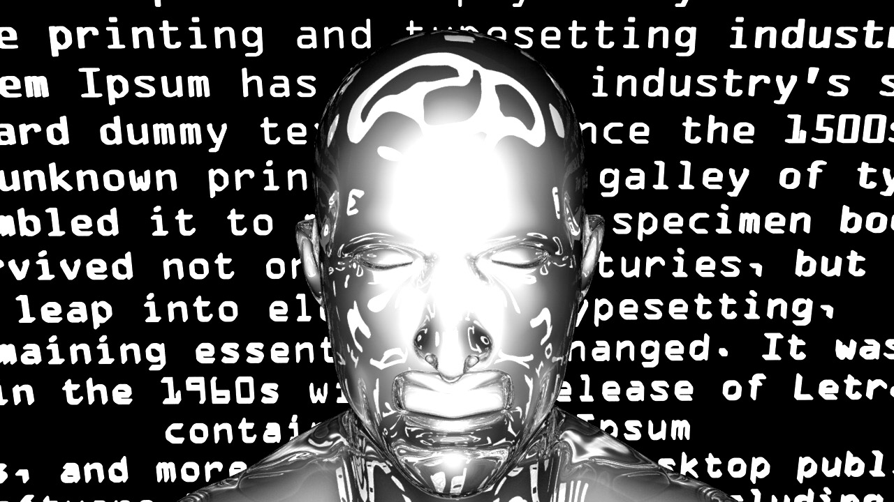

Relative Informational Symmetry
It’s a social structure in which no one knows everything or have access to all the information. However, when it comes to decision making, people will be assisted and provided with the required information to make the optimal decision.

Enter→
//firstpage//